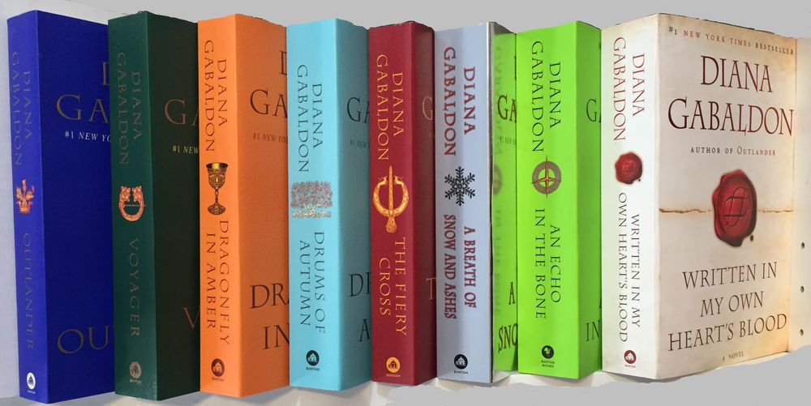

Outlander
Created by Diana Gabaldon
The Books

Main series:
- Outlander* (1991)
- Dragonfly in Amber (1992)
- Voyager (1993)
- Drums of Autumn (1996)
- The Fiery Cross (2001)
- A Breath of Snow and Ashes (2005)
- An Echo in the Bone (2009)
- Written in My Own Heart's Blood (2014)
- Go Tell the Bees That I Am Gone (forthcoming)
*Released as Cross Stitch in the U.K., Australia, and New Zealand